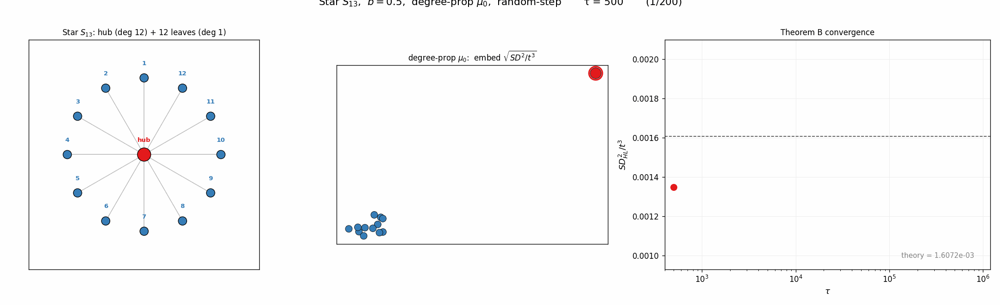
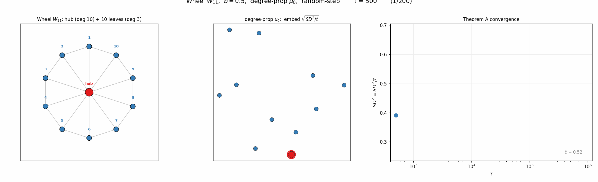
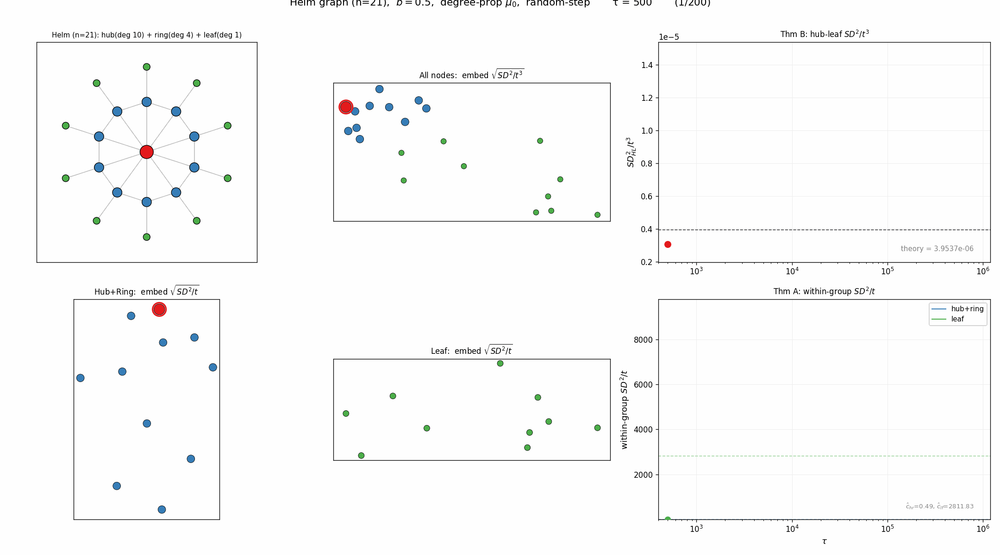
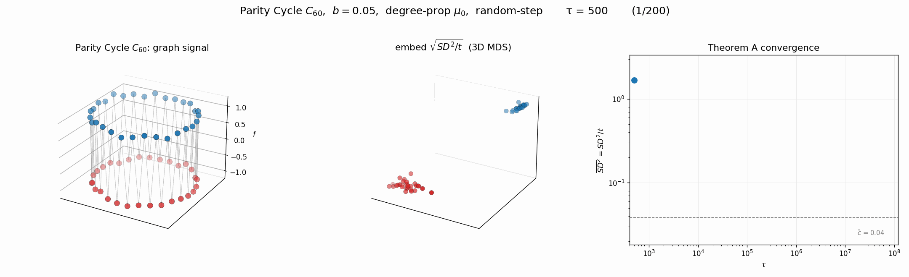
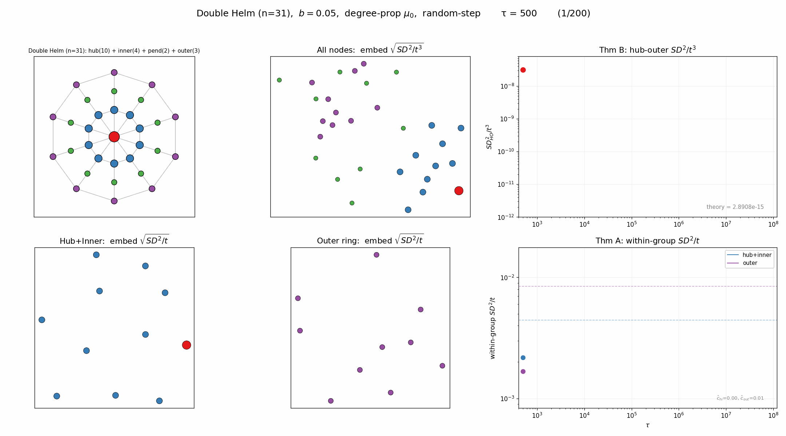
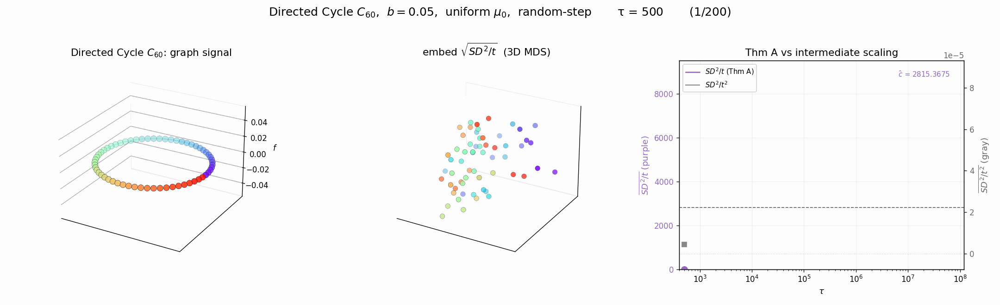
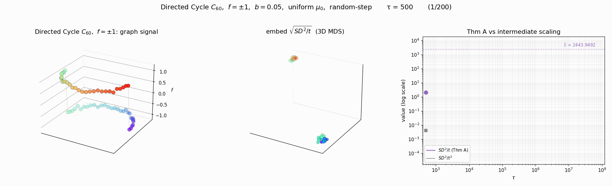
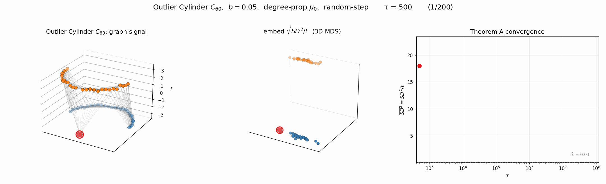

연구 ▷ HST ▷ Thm A, B의 실제 검증
각 노드의 장기 적립률을 \(\rho_i = \lim_{t\to\infty} \frac{1}{t}\sum_{s=1}^t \mathbf{1}\{X_s = v_i\}\) 라 하자. \(\rho\)가 균등한지 여부에 따라 SD의 스케일링이 달라진다.
- Thm A — Balanced (\(\rho_i = 1/n\)): \(SD^2/t \to c\) (유한 상수). 극한은 그래프-신호 상호작용을 반영.
- Thm B — Drift (\(\rho_i \neq \rho_j\)): \(SD^2/t \to \infty\). 대신 \(\frac{SD^2_{ij}(t)}{t^3} \to \frac{\bar{b}^2(\rho_i - \rho_j)^2}{3}\).
비정규 그래프에서 degree-proportional \(\mu_0\)를 쓰면 높은 차수 노드에 눈이 더 자주 쌓여 drift에 빠질 수 있다. 세 가지 비정규 그래프로 검증해보았다 (100만 스텝, degree-prop \(\mu_0\)).
추가예제 1: Star \(S_{13}\)
hub의 degree는 12, leaf는 1이다. degree-proportional \(\mu_0\)를 쓰면 \(\mu_0(\text{hub}) = 12/24 = 0.5\)로 hub에 reset이 집중된다. 시뮬레이션에서 \(\hat{\rho}_{\text{hub}} = 0.33\), \(\hat{\rho}_{\text{leaf}} = 0.056\). \(\mu_0 = 0.5\)와 다른 이유는 block/flow dynamics가 적립을 재분배하기 때문이다. 어쨌든 \(\rho\)가 균등하지 않으므로 drift regime.

추가예제 2: Wheel \(W_{11}\)
Wheel = Star + outer cycle. hub의 degree는 10, leaf는 3이다. 비정규 그래프이지만, outer cycle 덕분에 눈이 골고루 퍼져서 \(\rho_i \approx 1/n\)이 된다. 즉 balanced regime이고, \(SD^2/t\)가 유한 상수로 수렴한다 (Thm A).

추가예제 3: Helm (n=21) — two regime
Helm = Wheel + pendant leaves. 세 종류의 노드가 있다: hub (deg 10), ring (deg 4), pendant leaf (deg 1). \(\mu_0\)는 hub \(= 0.167\), ring \(= 0.067\), leaf \(= 0.017\)로 세 단계 격차가 생긴다. Helm은 두 regime이 공존하는 흥미로운 예이다:
- 그룹 간 (hub-leaf): \(\rho\)가 다르므로 drift regime. \(SD^2/t^3\)이 이론값으로 수렴 (Row 1 우측).
- 그룹 내 (hub+ring끼리, leaf끼리): 같은 그룹 안에서는 \(\rho\) 격차가 작아 \(SD^2/t\)가 유한 상수로 수렴 — balanced regime의 세밀한 구조가 남는다 (Row 2).

추가예제 1~3은 \(f=0\) (신호 없음)이었다. 이제 논문 본문의 예제 그래프에 신호를 얹어서, Thm A가 신호-그래프 상호작용을 반영하는 모습을 본다. 아래 예제들은 모두 balanced regime (Thm A)이고, 3D로 그래프 시그널과 SD 임베딩을 함께 시각화한다.
추가예제 4: Parity Cycle \(C_{60}\)
양방향 cycle (deg=2, 정규). 신호는 \(f_i = (-1)^i\) (Nyquist 주파수). 이웃끼리 신호가 반대이므로 block이 자주 발생한다. 정규 그래프 → balanced.

추가예제 5: Twin Rings (n=60)
inner ring (r=0.5) 과 outer ring (r=1.0), 각 30노드. Gaussian kernel 연결. 신호: inner \(\sin\theta\), outer \(\sin(\theta+\pi/2)\) — 위상 \(\pi/2\) 어긋남. 비정규이지만 \(\rho\) 격차가 작아 balanced.

추가예제 6: Directed Cycle \(C_{60}\)
단방향 shift matrix (\(W_{i,i+1}=1\)). 신호: 반원 경계에서 \(\pm 1\). doubly stochastic이므로 \(\rho_i = 1/n\) → balanced.

추가예제 7: Outlier Cylinder \(C_{60}\)
예제2 실린더 (Gaussian kernel, 위=-3, 아래=+3) 에서 +3 그룹 정중앙 한 노드만 -3으로 flip. 정규 → balanced. 국소적 outlier가 SD 임베딩에서 어떻게 분리되는지 관찰한다.

추가예제 8: Double Helm (n=31)
Helm에 outer ring을 추가. hub (deg 10) + inner ring (deg 4) + pendant (deg 2) + outer ring (deg 3). 4종류 degree → 그룹 간 drift + 그룹 내 balanced이 더 복잡하게 공존.

결국 두 regime 모두 \(\tau \to \infty\)에서 초기 신호 \(\mathbf{y}\)는 씻겨나간다. 차이는 어떤 그래프 정보가 남느냐: balanced는 flow/block dynamics의 세밀한 구조, drift는 단순히 적립률 격차.